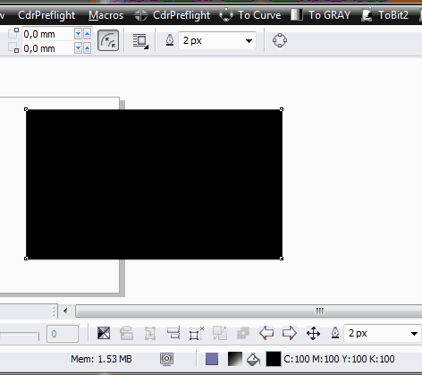

Суммарное покрытие краской
zmeiy / 04.02.2011, 14:50/00:41
Форум:
Подскажите плиз, существует ли в кореле настройка ограничения суммарного покрытия краской надо к примеру не более 270%
Подскажите плиз, существует ли в кореле настройка ограничения суммарного покрытия краской надо к примеру не более 270%
PS
kpars, 15 корел применяет/ковертурует в профиль ВСЁ, и СМИК в том числе!
А по поводу показа участков превышения, я хз, раз не сделали, значит не просили. Можешь сам поднять этот вопроса на coreldraw.com для обсуждения.
Sancho, проверил, не конвертит. Нарисуй бокс с 400% и конвернтни. Как было так и осталось. Настройки цвета вот:
kpars, хреново проверял :D

Sancho, Я вообще-то другое имел ввиду. В документе присутствуют растровые и векторные объекты, где сумма красок превышает 300%. Избегая конвертации открываем документ (чтобы не попортить цвет объектов, которые конвертить не надо). Конверт ту битмап произведет конвертацию только ргб обектов, смук оставит без изменения. Показанный тобой метод хорош только для тех случаев, где цвет остальных объектов нас мало заботит.
Добавлено (13.02.2011, 17:32)
---------------------------------------------
Вообще, мы сейчас переходим в стадию дискуссии о способах цветокоррекции изображений, о которых у двух людей три мнения. Собственно вопрос был об отсутствии в кореле инструмента для показа в файле участков, превышающих максимальное значение суммы красок. Очевидно, что валовая конвертация всего файла нежелательна, поскольку пострадают объекты, конвертация которых не только не нужна, но и запретна (например логотипы компаний, фирменные цвета и т.п.). Поэтому и хотелось бы видеть в кореле такой инструмент.
Кстати говоря. такого нет по-моему ни в фотошопе, ни в люстре. Беспредел какой-то!
kpars, ответ был во 2 посте, остальное уже плаванье около
Страницы